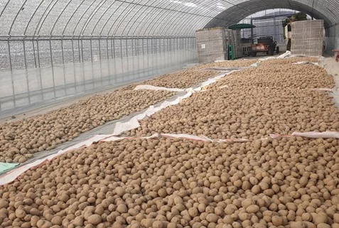
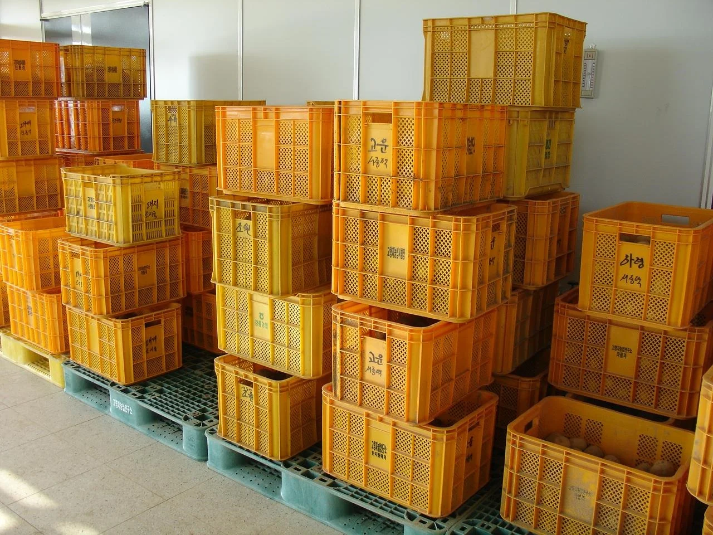

봄감자 그늘 싹틔우기｜파종 20~30일 전부터 거꾸로 짜는 준비표

씨감자를 펼쳐 그늘 싹틔우기하는 참고 사진.
봄감자 준비는 지금 바로 씨감자를 따뜻하게 두는 것으로 시작하지 않습니다. 내 지역 파종 예정일을 정한 뒤 20~30일을 거슬러 싹틔우기 일정을 잡는 것이 먼저입니다. 농촌진흥청의 2026년 자료를 바탕으로 온도·빛·환기를 함께 점검하세요.
싹을 미리 틔우는 목적부터 이해합니다
씨감자를 미리 싹틔우면 심은 뒤 싹이 땅 위로 나오는 시간을 줄여 생육기간 확보에 도움이 됩니다. 그렇다고 모든 품종·포장에서 같은 증수율을 보장하는 기술은 아닙니다. 지역 파종 적기와 토양 상태, 품종·저장 이력이 다르면 싹 자라는 속도도 달라집니다. 먼저 씨감자의 무름·부패와 속이 검어지는 흑색심부 증상 등을 확인합니다.
온도만 맞추지 말고 빛과 공기를 통하게 합니다
공식 자료는 15~20℃, 습도 80~90% 수준, 직사광선을 피하는 30~50% 차광을 제시합니다. 바닥에 얇게 펴거나 통풍되는 상자를 2~3단 엇갈려 쌓고 2~3일마다 위치를 바꿔 고르게 빛을 받게 합니다. 낮 환기와 밤 보온을 함께 관리하며, 물 관리가 과습·밀폐로 이어지지 않게 살피세요. 습도 수치를 맞추려고 씨감자를 계속 젖게 두는 방식은 피합니다.
| 시점 | 작업 | 기록할 값 |
|---|---|---|
| 파종일 결정 | 지역 적기·밭 상태 확인 | 예정일 ___ |
| 20~30일 전 | 선별·그늘 싹틔우기 시작 | 온도·습도 ___ |
| 2~3일마다 | 상자 위치 교환·환기 점검 | 싹 균일도·부패 유무 |
| 파종 전 | 싹 길이·절단·도구 관리 | 종자 로트·이상 여부 |

씨감자를 통풍 가능한 상자에 담아 관리하는 참고 사진.
파종일 3월 10일을 가정한 일정
2027년 3월 10일 파종을 가정하면 20~30일 전은 2월 8~18일입니다. 이는 달력 계산 예시로 지역 적기 추천이 아닙니다. 파종에 알맞은 싹 길이는 자료 기준 1~2cm 이내이며, 일정만 채웠다고 바로 심기보다 싹 상태와 밭 상태를 함께 봅니다.
절단할 때는 종자 상태와 도구를 관리합니다
공식 자료는 눈이 포함되도록 절단하고 한 조각 30~50g 정도를 제시합니다. 칼은 끓는 물에 30초 이상 소독한 뒤 충분히 식혀 사용하는 방법을 안내합니다. 열탕 취급은 화상에 주의하고 안전하게 작업하세요. 썩거나 이상이 있는 씨감자를 섞지 말고, 의심 증상은 공급기관·기술센터에 확인합니다.
작업 전 점검표
- 지역 파종일을 먼저 정했다
- 밀폐·산소 부족과 밤 냉해를 함께 점검한다
- 병든 씨감자를 제외하고 칼 소독·냉각 순서를 지킨다
싹틔우기는 달력과 생육 상태를 함께 보는 작업입니다. 날짜를 채우는 것만으로 준비가 끝나지 않습니다.